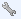

Extensions¶
Modules¶
The modules can be used to add additional functionalities to Centreon. It is possible to install modules using the YUM utility or source files (*.tar.gz).
There are 3 kinds of modules:
- Community modules, under license GPL v2, developed by the Centreon community
- Core modules, under license GPL v2, developed by the Centreon team
- Proprietary modules, subject to a license, developed by Centreon
To install a module:
- Install the module from the associated documentation (most often in the directory: /usr/share/centreon/www/modules on the central server)
- Go into the menu: Administration ==> Extensions
- Click on the icon to start installation of the module
- Click now on Install to install the module
The table below summarises the columns of the page:
| Column | Description |
|---|---|
| Name | Contains module name |
| Real name | Contains module complete name |
| Informations | Contains information about the module |
| Release | Indicates the module version |
| Author | Indicates the module author |
| Expiration date | Indicates license expiration date |
| Installed | Indicates if the module is installed or not |
| Status | Indicates the module status : installed, installed but without license, unknown etc. |
| Actions | Serves to perform actions on a module : To install a module, click on To configure a module, click on  To delete a module, click on , and then confirm the deletion To update a module, click on and then follow the process |
Widgets¶
Widgets enable us to construct customised views, dealt with in the chapter covering widgets.
To install a widget:
- Install the widget from the associated documentation (most commonly in the directory entitled: /usr/share/centreon/www/widgets on the central server)
- Go into the menu: Administration ==> Extensions
- In the left menu, click on Setup under Widgets
- Click on to start the installation of the widget
The table below summarises the columns of the page:
| Column | Description |
|---|---|
| Title | Contains widget name |
| Description | Contains information about the widget |
| Version | Indicates widget version |
| Author | Indicates widget author |
| Actions | Serves to perform actions on a widget: To install a widget, click on To delete a widget, click on , and then confirm the deletion To update a widget, click on and then follow the process |